| Removing Antivirus Live, Antivirus 2010, Security Tool, (HTML/goldun.axt), Fake Antivirus or whatever: | Current Issues Blog |
|
The first thing you’ll want to do is reboot your computer, and hit the F8 key right before Windows starts loading (you can hit it a bunch of times). Then select the Safe Mode with Networking option.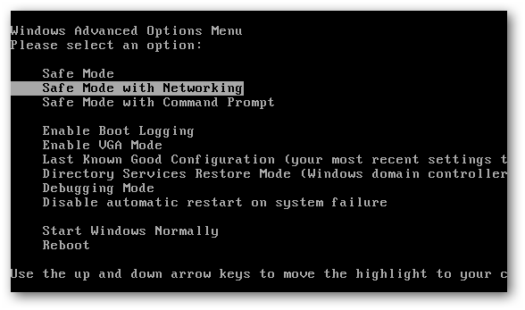 If your Internet connection is not working, to get your Internet connection working open Internet Explorer, then click on Tools, then Internet Options, then click on the Connections tab, then click on LAN settings. It will look something like the figure below. 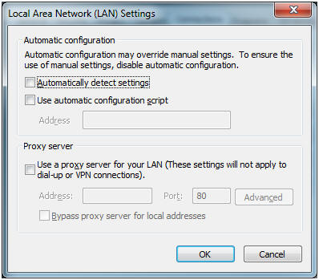 The box for “Use a proxy server…” should NOT be clicked. If it is, unclick it then click OK and then OK again. Close and then reopen Internet Explorer. Internet access should now work. You can now install Superantispyware, either from the CD (superantispyware.exe) or download it (search for it). Once it is installed you should run it. It will do some analysis, then you click Next. 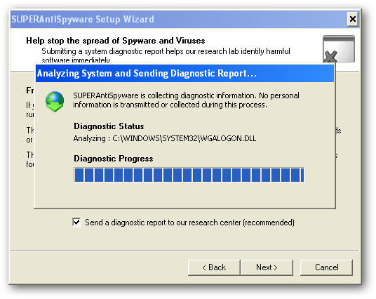 The full application will start and you should click check for updates. (If won’t install, see appendix) 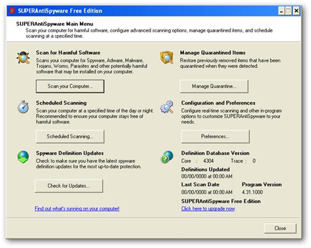 Once it has updated the definitions, click Scan your computer. Then select your primary drive (C:) and then select Perform complete scan. 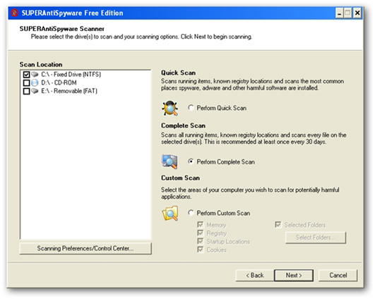 It will run for a long time and detect some things. 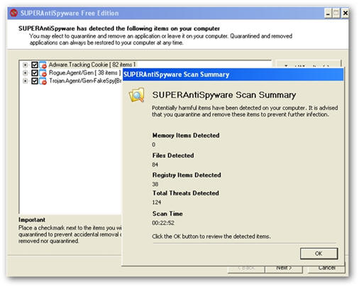 Now go through the wizard to remove the things that were found. After things have been removed, click OK to reboot your PC. 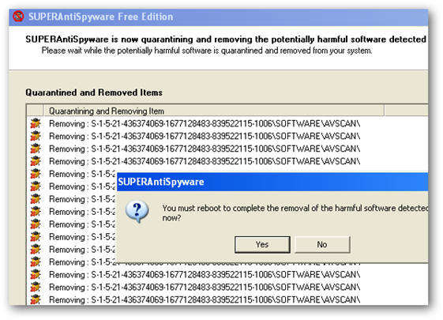 When your computer restarts go back into Safe Mode by pressing F8 as you did at the start. If you
cannot install SuperAntiSpyware or Malware Bytes, see the appendix at
the end of this document. Now install Malwarebytes, either from the CD (mbam-sestup.exe) or download it by searching. 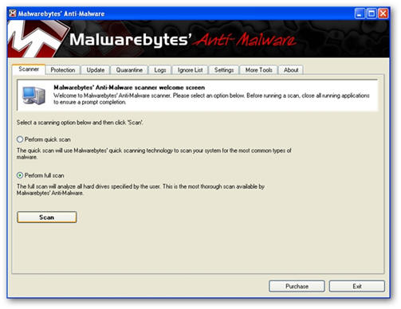 Once it is installed, run it, then click on the Update tab and get the latest definitions. Then click on the Scanner tab and Perform a full scan. Malwarebytes will find more things that should be removed. After the scan is completed be sure to click the Remove Selected button to remove the things that were found. 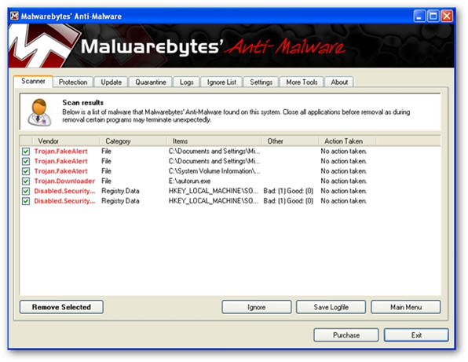 Now reboot your PC again and it should be able to start and function normally.
Appendix If you
cannot install SuperAntiSpyware or Malwarebytes, try the following: Sometimes the virus will not allow you to install or run antivirus programs or even other programs. You may see something like this: 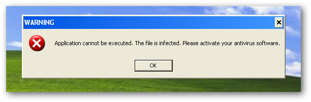 |
You need to run the portable version of SuperAntiSpyware from the CD. On this CD the file is named SAS_604A0822.COM. Once you run it you should see:
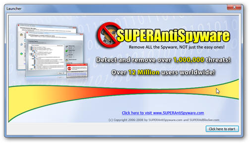
Click on the “Click here to start” button and the pick your language, then click OK.
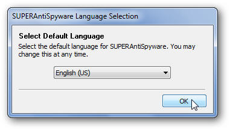
You will now see the regular screen as shown below and should first check for updates and then scan your computer. Once you have done that you can go on to installing Malwarebytes.
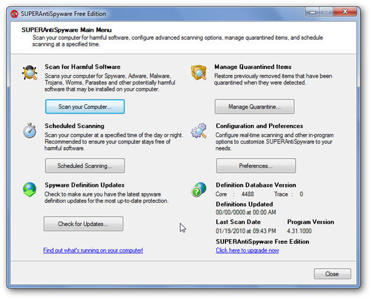